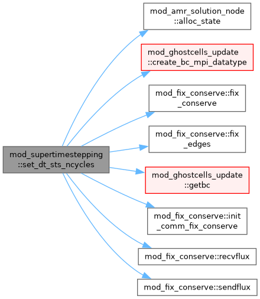
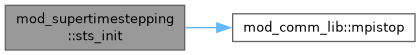

Generic supertimestepping method which can be used for multiple source terms in the governing equations where each term introduces a sts_term type and all sts terms are stored in a pointer list. More...
Functions/Subroutines | |
| subroutine, public | sts_init () |
| Initialize sts module. | |
| pure logical function, public | is_sts_initialized () |
| subroutine, public | add_sts_method (sts_getdt, sts_set_sources, startvar, nflux, startwbc, nwbc, evolve_b) |
| subroutine which added programatically a term to be calculated using STS Params: sts_getdt function calculates the explicit timestep for this term sts_set_sources subroutine sets the source term startVar, nflux (making endVar=startVar+nflux-1) indices of start and number of the variables that need fix conservation startwbc, nwbc indices of start and number of the variables that need ghost cell exchange These terms implemented by an element of the derived type sts_term are put in a linked list | |
| subroutine, public | set_conversion_methods_to_head (sts_before_first_cycle, sts_after_last_cycle) |
| Set the hooks called before the first cycle and after the last cycle in the STS update This method should be called after add_sts_method. The hooks are added to the last term added with this subroutine Params: sts_before_first_cycle, sts_after_last_cycle subroutines which implement the hooks called before first cycle and after last cycle. | |
| subroutine, public | set_error_handling_to_head (sts_error_handling) |
| Set the hook of error handling in the STS update. This method is called before updating the BC. This method should be called after add_sts_method. The hook is added to the last term added with this subroutine. Param: sts_error_handing the subroutine which handles the errors. | |
| logical function, public | set_dt_sts_ncycles (my_dt) |
| This sets the explicit dt and calculates the number of cycles for each of the terms implemented with STS. | |
Variables | |
| double precision, public | lb_tc_accum = 0.0d0 |
| Per-rank TC/STS compute accumulator for lb_diagnose. Sums the wall time spent inside the iigrid block-loops that call sts_set_sources (the per-block parabolic-conduction kernel) plus the per-block STS hooks (before_first_cycle, after_last_cycle, sts_handle_errors, phys_update_temperature). Excludes inter-rank ghostcell exchanges (getbc) and flux-conservation collectives. Reset by mod_advance::advance at the start of each step. | |
| integer, parameter, public | sourcetype_sts_prior =0 |
| integer, parameter, public | sourcetype_sts_after =1 |
| integer, parameter, public | sourcetype_sts_split =2 |
| integer, public | sourcetype_sts = sourcetype_sts_split |
| type(sts_term), pointer | head_sts_terms |
| procedure(subr3), pointer, public | sts_add_source |
Detailed Description
Generic supertimestepping method which can be used for multiple source terms in the governing equations where each term introduces a sts_term type and all sts terms are stored in a pointer list.
user control is in 1) amrvac.par where namelist sts_list sets the following parameters which have default values: sts_dtpar=0.5,sts_ncycles=1000,sts_method=1,sourcetype_sts=2 These parametes are shared for all the terms added
Any STS-handled term is done via 2) program in the code a term with the subroutine add_sts_method This method takes as parameters a function which calculates the explicit timestep associated with the term and a subroutine which sets the source term for the variables startVar:endVar=startVar+nflux-1 flux conservation (fixconserve) is done for the variables as specified by ixChangeStart, ixChangeN, ixChangeFixC
3) one can have hooks before_first_cycle, after_last_cycle (e.g. conversion from e_tot to e_int before first sts cycle and back from e_int to e_tot after the last STS cycle as used for the thermal conductivity module) add those hooks just afterwards with the subroutine set_conversion_methods_to_head
4) add the hook for error handling (e.g check small values in the thermal conductivity module) call set_error_handling_to_head which takes as parameter a subroutine this error handling subroutine is called before setting BC
Function/Subroutine Documentation
◆ add_sts_method()
| subroutine, public mod_supertimestepping::add_sts_method | ( | external double precision function(double precision, dimension(ixg^s,1:nw), intent(in) w, integer, intent(in) ixg, integer, intent(in) l, integer, intent(in) ix, l, double precision, intent(in) dx, double precision, intent(in) d, double precision, dimension(ixg^s,1:ndim), intent(in) x) | sts_getdt, |
| external subroutine(integer, intent(in) ixi, integer, intent(in) l, integer, intent(in) ixo, l, double precision, dimension(ixi^s,1:nw), intent(inout) w, double precision, dimension(ixi^s,1:ndim), intent(in) x, double precision, dimension(ixi^s,1:nw), intent(inout) wres, logical, intent(in) fix_conserve_at_step, double precision, intent(in) my_dt, integer, intent(in) igrid, integer, intent(in) nflux) | sts_set_sources, | ||
| integer, intent(in) | startvar, | ||
| integer, intent(in) | nflux, | ||
| integer, intent(in) | startwbc, | ||
| integer, intent(in) | nwbc, | ||
| logical, intent(in) | evolve_b ) |
subroutine which added programatically a term to be calculated using STS Params: sts_getdt function calculates the explicit timestep for this term sts_set_sources subroutine sets the source term startVar, nflux (making endVar=startVar+nflux-1) indices of start and number of the variables that need fix conservation startwbc, nwbc indices of start and number of the variables that need ghost cell exchange These terms implemented by an element of the derived type sts_term are put in a linked list
Definition at line 215 of file mod_supertimestepping.t.
◆ is_sts_initialized()
| pure logical function, public mod_supertimestepping::is_sts_initialized |
Definition at line 183 of file mod_supertimestepping.t.
◆ set_conversion_methods_to_head()
| subroutine, public mod_supertimestepping::set_conversion_methods_to_head | ( | external subroutine(integer, intent(in) ixi, integer, intent(in) l, integer, intent(in) ixo, l, double precision, dimension(ixi^s,1:nw), intent(inout) w, double precision, dimension(ixi^s,1:ndim), intent(in) x) | sts_before_first_cycle, |
| external subroutine(integer, intent(in) ixi, integer, intent(in) l, integer, intent(in) ixo, l, double precision, dimension(ixi^s,1:nw), intent(inout) w, double precision, dimension(ixi^s,1:ndim), intent(in) x) | sts_after_last_cycle ) |
Set the hooks called before the first cycle and after the last cycle in the STS update This method should be called after add_sts_method. The hooks are added to the last term added with this subroutine Params: sts_before_first_cycle, sts_after_last_cycle subroutines which implement the hooks called before first cycle and after last cycle.
Definition at line 277 of file mod_supertimestepping.t.
◆ set_dt_sts_ncycles()
| logical function, public mod_supertimestepping::set_dt_sts_ncycles | ( | double precision, intent(inout) | my_dt | ) |
This sets the explicit dt and calculates the number of cycles for each of the terms implemented with STS.
Definition at line 371 of file mod_supertimestepping.t.

◆ set_error_handling_to_head()
| subroutine, public mod_supertimestepping::set_error_handling_to_head | ( | external subroutine(double precision, dimension(ixi^s,1:nw), intent(inout) w, double precision, dimension(ixi^s,1:ndim), intent(in) x, integer, intent(in) ixi, integer, intent(in) l, integer, intent(in) ixo, l, integer, intent(in) step) | sts_error_handling | ) |
Set the hook of error handling in the STS update. This method is called before updating the BC. This method should be called after add_sts_method. The hook is added to the last term added with this subroutine. Param: sts_error_handing the subroutine which handles the errors.
Definition at line 302 of file mod_supertimestepping.t.
◆ sts_init()
| subroutine, public mod_supertimestepping::sts_init |
Initialize sts module.
Definition at line 162 of file mod_supertimestepping.t.

Variable Documentation
◆ head_sts_terms
| type(sts_term), pointer mod_supertimestepping::head_sts_terms |
Definition at line 153 of file mod_supertimestepping.t.
◆ lb_tc_accum
| double precision, public mod_supertimestepping::lb_tc_accum = 0.0d0 |
Per-rank TC/STS compute accumulator for lb_diagnose. Sums the wall time spent inside the iigrid block-loops that call sts_set_sources (the per-block parabolic-conduction kernel) plus the per-block STS hooks (before_first_cycle, after_last_cycle, sts_handle_errors, phys_update_temperature). Excludes inter-rank ghostcell exchanges (getbc) and flux-conservation collectives. Reset by mod_advance::advance at the start of each step.
Definition at line 46 of file mod_supertimestepping.t.
◆ sourcetype_sts
| integer, public mod_supertimestepping::sourcetype_sts = sourcetype_sts_split |
Definition at line 60 of file mod_supertimestepping.t.
◆ sourcetype_sts_after
| integer, parameter, public mod_supertimestepping::sourcetype_sts_after =1 |
Definition at line 58 of file mod_supertimestepping.t.
◆ sourcetype_sts_prior
| integer, parameter, public mod_supertimestepping::sourcetype_sts_prior =0 |
Definition at line 57 of file mod_supertimestepping.t.
◆ sourcetype_sts_split
| integer, parameter, public mod_supertimestepping::sourcetype_sts_split =2 |
Definition at line 59 of file mod_supertimestepping.t.
◆ sts_add_source
| procedure (subr3), pointer, public mod_supertimestepping::sts_add_source |
Definition at line 156 of file mod_supertimestepping.t.
Generated by